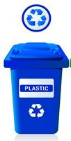
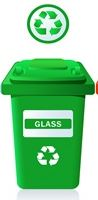
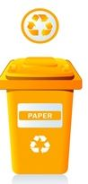

Info Ambiental
Sua pontuação
400
7% Acima da média brasileiraExplicação
Se todas as pessoas tivessem o seu estilo de vida precisaríamos urgentemente realizar o consumo racional dos recursos disponíveis.
Simulando seu consumo para o planeta | Como seria se a população mundial tivesse o consumo de recursos igual ao seu.
Tempo de decomposição dos materiais
| Material | Tempo de decomposição | Benefício de descartar corretamente, evita: | Ou se decompõe em | |
|---|---|---|---|---|
|  | Plástico | 450 anos | A extração do dobro de petróleo | Em algumas centenas de anos |
|  | Vidro | 1 milhão de anos | A extração de 1300 kg de areia | Em 1 milhão de anos |
| Metal | 50 a 200 anos | A extração de 5 toneladas de bauxita | Em dezenas ou centenas de anos | |
|  | Papel | 2 a 6 semanas | O corte de 20 árvores | Em semanas |
Tópicos
Moradia - Tome cuidado com o nível de consumo de água!
Alimentação - Seu tipo de alimentação é um dos melhores!
Transporte - Sempre usando meios de transportes que beneficam o meio ambiente!
Consumo - Atente-se ao consumo de eletrônicos!
Resíduos - Recicle seus resíduos quando puder!